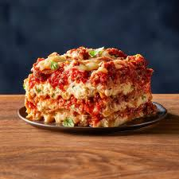

lasagna

Description of Lasagna:
Lasagna is a hearty Italian dish made of layers of flat pasta sheets alternated with rich fillings such as ragù (meat sauce), béchamel or ricotta, and grated cheese. Baked until golden and bubbling, it offers a comforting blend of textures and flavors, from the soft pasta to the savory sauce and melted cheese. Traditionally from Emilia-Romagna, lasagna has become a staple at family gatherings and celebrations, symbolizing warmth and togetherness. Its adaptability allows for endless variations, including vegetarian or seafood versions, while still maintaining its classic, soul-satisfying appeal.
Ingredients
- Lasagna noodles (fresh or dried)
- Ground beef or pork (for ragù)
- Tomato sauce or crushed tomatoes
- Onion, garlic, and olive oil
- Ricotta or béchamel sauce
- Mozzarella cheese
- Parmesan cheese
- Salt, pepper, and Italian herbs
Steps on how to cook it:
- Cook the lasagna noodles until al dente (skip if using no-boil noodles).
- Prepare the ragù by sautéing onion and garlic, adding ground meat, and cooking with tomato sauce.
- Prepare béchamel or use ricotta cheese for layering.
- In a baking dish, spread a thin layer of sauce.
- Layer noodles, sauce, ricotta/béchamel, and mozzarella, repeating until the dish is full.
- Top with Parmesan and extra mozzarella.
- Bake until golden and bubbling on top.
- Let rest before slicing and serving.
Go back to choose for other recipes